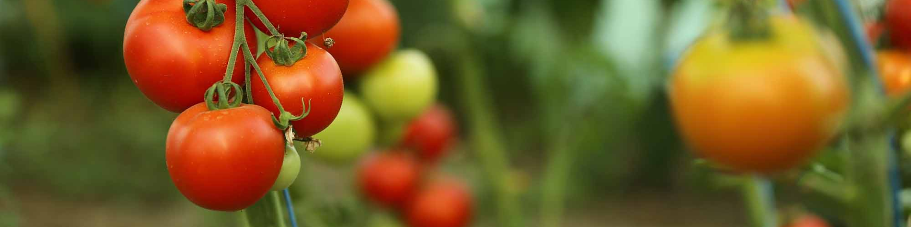
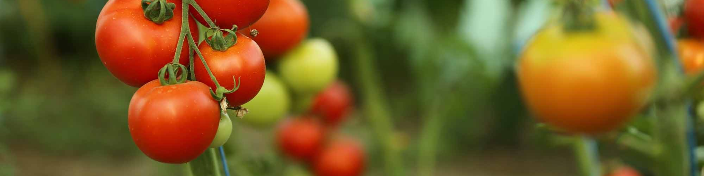

Agridera aims to be one of the world`s leading companies in the breeding, production, and marketing, of tomato seeds. We invest invensively in research and development to provide solutions to growers and consumers in numerous countries around the world. In particular, we breed improved disease-resistant culltivars adapted to different markets globally.
Currently, emphasis is placed on combining Tomato Yellow Leaf Curl Virus (TYLCV) and Tomato Spotted Wilt Virus(TSWV) resistances with othersoil borne diseases into superior tomato breeding lines and hybrids. Moreover, comprehensive efforts are being undertaken to develop varieties resistance to TBRFV virus (Tomato Brown Rugose Fruit Virus).
In terms of horticultural traits, breeding is for earliness, different fruit sizes, firmness, red fruit color, flavor, crack resistance, shelf life, and high/low temperature fruit set. Combinations of quality features and disease resistance are sought in a variety of types, namely round and elongated shapes.
Agirdera Tomato breeding programs are focusin on three main segments: Greenhouse Indeterminate Tomatoes, Open-field Indeterminate Tomatoes, and Bush Type Open-field Tomatoes.
Greenhouse Tomato Breeding Program
Open-field Indeterminate Tomatoes
Open-field Bush Type Tomatoes
This breeding is aimed for the Spanish and Turkish markets. For single and cluster picks, round fruit shape and resistances of TYLCV, TSWV, Nematodes and FORL (Fusarium oxysporum f.sp. radicis-lycopersici). Some hybrids may include more resistances, such as Cladosporium and Leveillula Taurica (Lv).
This breeding is for Brazilian, Moroccan, and Turkish markets. The main focus is on large round shape fruits (200 grams plus); and resistances of TYLCV, TSWV, Nematodes and FORL. In the near future, F3 (Fusarium oxysporum f.sp. lycopersici) will be included as basic resistance in our cultivars.
This breeding is for Mediterranean markets. We breed round and elongated shapes, standard sizes (140- 180 grams), and beef sizes (min. 180 grams up to 300 grams and more). We combine the resistances of TYLCV, TSWV and Nematodes as basic resistances in our hybrids. However, some hybrids may include more resistances, such as Cladosporium and Leveillula Taurica (Lv).
Agridera operates through international and local distributers around the world.